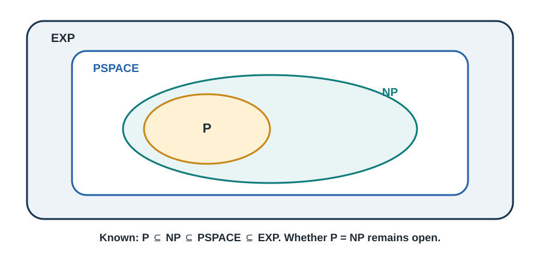

7 Computational Complexity & NP-Completeness - The Limits of Computing
The Hardest Problems in Computer Science
“P versus NP: The question that could make you a millionaire… literally.”
Introduction: The Million Dollar Question
In the year 2000, the Clay Mathematics Institute announced seven “Millennium Prize Problems,” offering $1 million for solving any one of them. Six were deep mathematical puzzles that had stumped mathematicians for decades or centuries. But one was different—it was a computer science question that you could explain to a child:
“If a solution to a problem is easy to check, is it also easy to find?”
This seemingly simple question, known as P versus NP, is the most important unsolved problem in computer science. Its answer would revolutionize computing, cryptography, artificial intelligence, and even our understanding of creativity itself.
A Tale of Two Problems
Let me tell you about two friends, Alice and Bob, who work at a shipping company:
Alice’s Job (Easy): Given a specific route for delivery trucks, calculate if it’s under 100 miles. - She just adds up the distances: 15 + 23 + 18 + 30 + 9 = 95 miles - Takes her 30 seconds - Anyone could do this quickly
Bob’s Job (Hard?): Find the shortest possible route that visits all 20 delivery locations. - There are 20! (about 2.4 quintillion) possible routes - Even checking a million routes per second would take 77,000 years - But once Bob finds a route, Alice can verify it’s correct in seconds!
This is the heart of P vs NP: Bob’s problem seems fundamentally harder than Alice’s, even though verifying Bob’s solution is just as easy as Alice’s job.
Why This Matters to You
Understanding computational complexity isn’t just academic—it affects real decisions every day:
- When Your GPS Takes Forever
- Finding the absolute shortest route visiting multiple stops is NP-hard
- Your GPS uses approximations because the exact solution would take years
- Why Your Password is Safe (Maybe)
- Internet security relies on the assumption that factoring large numbers is hard
- If P = NP, most current encryption becomes breakable
- Why AI Can’t Solve Everything (Yet)
- Many AI problems are NP-complete
- We need clever workarounds, not brute force
- Why Some Games Are Hard
- Sudoku, Minesweeper, even some Pokemon games are NP-complete
- The fun comes from the computational challenge!
What You’ll Learn in This Chapter
We’ll demystify computational complexity step by step:
- The Complexity Zoo: Understanding P, NP, and their friends
- The Art of Reduction: Proving problems are hard
- Classic NP-Complete Problems: The “hardest” problems we know
- Coping Strategies: What to do when your problem is NP-complete
- The Big Picture: Implications for computing and beyond
By the end of this chapter, you’ll understand one of the deepest questions in mathematics and computer science—and you’ll know exactly what to do when someone asks you to solve a problem that would take until the heat death of the universe.
7.1 Understanding Computational Complexity
7.1.1 Time Complexity: How Long Does It Take?
Before we dive into P and NP, let’s understand what we mean by “hard” and “easy” problems.
7.1.1.1 The Birthday Party Planning Problem
Imagine you’re planning a birthday party and need to complete various tasks:
Task 1: Addressing Invitations - 30 guests = 30 invitations to write - 60 guests = 60 invitations - Time doubles when guests double - This is linear time: \(O(n)\)
Task 2: Everyone Shaking Hands - 30 guests = 435 handshakes (each pair shakes once) - 60 guests = 1,770 handshakes - Time quadruples when guests double - This is quadratic time: \(O(n^2)\)
Task 3: Seating Arrangements - 10 guests = 3,628,800 possible arrangements - 11 guests = 39,916,800 possible arrangements - Adding ONE guest multiplies possibilities by 11! - This is factorial time: \(O(n!)\)
The difference is staggering:
| Guests | Linear (\(O(n)\)) | Quadratic (\(O(n^2)\)) | Factorial (\(O(n!)\)) |
|---|---|---|---|
| 10 | 10 steps | 100 steps | 3,628,800 steps |
| 20 | 20 steps | 400 steps | 2.4 × 10¹⁸ steps |
| 30 | 30 steps | 900 steps | 2.7 × 10³² steps |
If each “step” takes 1 microsecond: - Linear (30 guests): 0.00003 seconds - Quadratic (30 guests): 0.0009 seconds - Factorial (30 guests): 8.5 × 10¹⁸ years (older than the universe!)
7.1.2 Polynomial vs Exponential: The Great Divide
The fundamental distinction in complexity theory is between:
Polynomial Time (considered “efficient”): - \(O(n)\), \(O(n^2)\), \(O(n^3)\), even \(O(n¹⁰⁰)\) - Doubles input → time increases by fixed factor - Practical for large inputs with enough resources
Exponential Time (considered “inefficient”): - \(O(2^n)\), \(O(n!)\), \(O(n^n)\) - Each additional input multiplies time - Quickly becomes impossible even for moderate inputs
7.1.2.1 The Wheat and Chessboard Story
An ancient story illustrates exponential growth:
A wise man invents chess for a king. The king offers any reward. The man asks for wheat grains on a chessboard: 1 grain on the first square, 2 on the second, 4 on the third, doubling each time.
- Square 1: 1 grain
- Square 10: 512 grains
- Square 20: 524,288 grains
- Square 30: 537 million grains
- Square 64: 18 quintillion grains (more wheat than exists on Earth!)
This is why exponential algorithms are impractical—they grow too fast!
7.2 The Classes P and NP
7.2.1 Class P: Problems We Can Solve Efficiently
Definition for Beginners: P is the class of problems that a computer can solve quickly (in polynomial time).
Formal Definition: P = {problems solvable by a deterministic Turing machine in polynomial time}
In Plain English: If you can write a program that always finds the answer in reasonable time (even for large inputs), it’s in P.
7.2.1.1 Examples of Problems in P
- Sorting a List
- Algorithm: MergeSort
- Time: \(O(n log n)\)
- Definitely in P!
- Finding Shortest Path (with positive weights)
- Algorithm: Dijkstra’s
- Time: \(O(E log V)\)
- In P!
- Testing if a Number is Prime
- Algorithm: AKS primality test
- Time: \(O(log⁶ n)\)
- In P! (This was only proven in 2002!)
- Maximum Flow in a Network
- Algorithm: Edmonds-Karp
- Time: \(O(VE^2)\)
- In P!
7.2.2 Class NP: Problems We Can Verify Efficiently
Definition for Beginners: NP is the class of problems where, if someone gives you a solution, you can quickly check if it’s correct.
The Name: NP stands for “Nondeterministic Polynomial” (not “Not Polynomial”!)
In Plain English: It’s like being a teacher grading homework—checking the answer is easy, even if solving the problem is hard.
7.2.2.1 Examples of Problems in NP
- Sudoku
- Solving: Hard (try all possibilities?)
- Checking: Easy (verify rows, columns, boxes)
- In NP!
- Finding Factors
- Problem: “Does 91 have a factor between 2 and 45?”
- Solving: Need to try many numbers
- Checking: Given “7”, just compute 91 ÷ 7 = 13 ✓
- In NP!
- Hamiltonian Cycle
- Problem: “Is there a route visiting each city exactly once?”
- Solving: Try quintillions of routes
- Checking: Given a route, just verify it visits each city once
- In NP!
7.2.3 The Critical Insight: P is a Subset of NP
Every problem in P is also in NP! Why?
If you can solve a problem quickly, you can certainly verify a solution quickly—just solve it and compare!
The big question is: Are there problems in NP that are NOT in P?
This is the P vs NP question!
7.2.4 Visualizing P, NP, and Beyond

7.2.5 Why We Think P ≠ NP
Most computer scientists believe P ≠ NP. Here’s why:
Intuition 1: Creativity vs Verification - Writing a symphony is hard - Recognizing a beautiful symphony is easy - Creation seems fundamentally harder than appreciation
Intuition 2: Search vs Verification - Finding a needle in a haystack: hard - Checking if something is a needle: easy - Search seems fundamentally harder than verification
Intuition 3: Decades of Failure - Thousands of brilliant minds have tried to find efficient algorithms - No one has succeeded for any NP-complete problem - If P = NP, surely someone would have found ONE efficient algorithm by now?
7.3 NP-Completeness - The Hardest Problems in NP
7.3.1 The Discovery That Changed Everything
Cook established the NP-completeness of satisfiability, providing the starting point for reductions among computational problems (Cook 1971).
This problem is called SAT (Boolean Satisfiability).
Karp then gave polynomial reductions establishing NP-completeness for a broad collection of combinatorial problems (Karp 1972). These problems are called NP-complete.
7.3.2 What Makes a Problem NP-Complete?
A problem is NP-complete if:
- It’s in NP (solutions can be verified quickly)
- It’s NP-hard (it’s at least as hard as every problem in NP)
Think of NP-complete problems as the “bosses” of NP: - Beat one boss → beat them all - They’re all equally hard - If any one is easy, they’re all easy
7.3.3 Understanding Reductions
Reduction is how we prove problems are NP-complete. It’s like translating between languages.
7.3.3.1 The Recipe Translation Analogy
Imagine you only speak English, but you have a recipe in French:
- The Hard Way: Learn French (takes years)
- The Smart Way: Translate the recipe to English (takes minutes)
Similarly, if we can translate (reduce) Problem A to Problem B: - If we can solve B, we can solve A - If A is hard, B must be at least as hard
7.3.3.2 Formal Reduction
To show Problem A reduces to Problem B (written A ≤ₚ B):
- Take any instance of Problem A
- Transform it to an instance of Problem B (in polynomial time)
- Solve the Problem B instance
- Transform the solution back to solve Problem A
If we can do this, and A is NP-hard, then B is also NP-hard!
7.3.4 The First NP-Complete Problem: SAT
7.3.4.1 Boolean Satisfiability (SAT)
The Problem: Given a boolean formula, is there an assignment of true/false to variables that makes the formula true?
Example:
Formula: (x OR y) AND (NOT x OR z) AND (NOT y OR NOT z)
Question: Can we assign true/false to x, y, z to make this true?
Try x=true, y=false, z=true:
- (true OR false) = true ✓
- (NOT true OR true) = (false OR true) = true ✓
- (NOT false OR NOT true) = (true OR false) = true ✓
- Formula = true AND true AND true = true ✓
Yes! It's satisfiable!7.3.4.2 Why SAT is Special
Cook proved that EVERY problem in NP can be reduced to SAT. The proof idea:
- Any NP problem has a verifier program
- We can represent the program’s execution as a boolean formula
- The formula is satisfiable ↔︎ the program accepts
This was revolutionary—it showed that one problem could capture the difficulty of ALL problems in NP!
7.4 Classic NP-Complete Problems
7.4.1 The Traveling Salesman Problem (TSP)
The Problem: A salesman must visit n cities exactly once and return home, minimizing total distance.
Why It’s Hard: - 10 cities: 181,440 possible routes - 20 cities: 60,822,550,200,000,000 possible routes - 30 cities: More routes than atoms in the observable universe
Real-World Applications: - Delivery route optimization - Circuit board drilling - DNA sequencing - Telescope scheduling
What Makes It NP-Complete: 1. In NP: Given a route, easy to verify its length 2. NP-hard: Can reduce Hamiltonian Cycle to TSP
7.4.2 The Knapsack Problem (Decision Version)
The Problem: Given items with weights and values, and a weight limit W, is there a subset worth at least V?
Example:
Items:
- Laptop: 3 kg, $1000
- Camera: 1 kg, $500
- Book: 2 kg, $100
- Jewelry: 0.5 kg, $2000
Knapsack capacity: 4 kg
Target value: $2500
Solution: Laptop + Jewelry = 3.5 kg, $3000 ✓Why It Matters: - Resource allocation - Investment portfolios - Cargo loading - Cloud computing resource management
7.4.3 Graph Coloring
The Problem: Can you color a map with k colors so no adjacent regions share a color?
Famous Instance: The Four Color Theorem - Any map on a plane needs at most 4 colors - Proven in 1976 with computer assistance - But deciding if a specific map needs only 3 colors is NP-complete!
Applications: - Scheduling (no conflicts) - Register allocation in compilers - Frequency assignment in wireless networks - Sudoku solving
7.4.4 3-SAT: The Special Case
The Problem: SAT where each clause has exactly 3 literals.
Example: \[ (x_1\lor x_2\lor x_3) \land(\neg x_1\lor x_3\lor x_4) \land(x_2\lor\neg x_3\lor\neg x_4). \]
Why It’s Important: - Easier to work with than general SAT - Still NP-complete - Most reductions start from 3-SAT
7.4.5 The Clique Problem
The Problem: Does a graph have a clique (complete subgraph) of size k?
Real-World Version: In a social network, is there a group of k people who all know each other?
Example:
Facebook friend network:
- Find a group of 10 people where everyone is friends with everyone else
- That's 45 friendships that must all exist
- Hard to find, easy to verify!7.5 Proving NP-Completeness
7.5.1 The Recipe for Proving NP-Completeness
To prove a new problem is NP-complete:
- Show it’s in NP (usually easy)
- Choose a known NP-complete problem (usually 3-SAT)
- Construct a reduction (the creative part)
- Prove the reduction works (both directions)
- Prove it runs in polynomial time
7.5.2 Example: Proving Vertex Cover is NP-Complete
7.5.2.1 The Vertex Cover Problem
Problem: Given a graph and integer k, is there a set of k vertices that “covers” every edge (every edge has at least one endpoint in the set)?
7.5.2.2 Step 1: Show Vertex Cover is in NP
Verifier: Given a set of k vertices, check if they cover all edges.
def verify_vertex_cover(graph, vertices, k):
if len(vertices) != k:
return False
for edge in graph.edges:
if edge[0] not in vertices and edge[1] not in vertices:
return False # Edge not covered
return True # All edges covered
# Runs in O(E) time - polynomial! ✓7.5.2.3 Step 2: Choose a Known NP-Complete Problem
We’ll reduce from 3-SAT (we know it’s NP-complete).
7.5.2.4 Step 3: Construct the Reduction
For each 3-SAT clause, create a “clause gadget”:
3-SAT Clause: (x OR y OR z)
Graph Gadget:
x ------- y
\ /
\ /
\ /
z
A triangle for each clause!For each variable, create a “variable gadget”:
x ------- NOT x
An edge between variable and its negation!Connect clause gadgets to variable gadgets based on literals.
7.5.2.5 Step 4: Prove the Reduction Works
Key Insight: - Vertex cover must pick 2 vertices from each triangle (clause) - Must pick 1 vertex from each variable edge - These choices correspond to satisfying assignment!
7.5.2.6 Step 5: Prove Polynomial Time
- Creating gadgets: \(O(clauses + variables)\)
- Connecting gadgets: \(O(clauses × 3)\)
- Total: Polynomial! ✓
Therefore, Vertex Cover is NP-complete!
7.6 Coping with NP-Completeness
7.6.1 When Your Problem is NP-Complete
Finding out your problem is NP-complete isn’t the end—it’s the beginning of finding practical solutions!
7.6.2 Strategy 1: Approximation Algorithms
Idea: Don’t find the perfect solution, find a good enough solution quickly.
7.6.2.1 Example: 2-Approximation for Vertex Cover
def vertex_cover_approx(graph):
"""
Find a vertex cover at most 2× optimal size.
Runs in O(E) time!
"""
cover = set()
edges = list(graph.edges)
while edges:
# Pick any edge
u, v = edges[0]
# Add both endpoints to cover
cover.add(u)
cover.add(v)
# Remove all edges incident to u or v
edges = [(a, b) for (a, b) in edges
if a != u and a != v and b != u and b != v]
return coverGuarantee: This always finds a vertex cover at most twice the optimal size!
7.6.3 Strategy 2: Fixed-Parameter Tractability
Idea: If some parameter k is small, maybe the problem is tractable.
Example: Vertex Cover with k = 10 - Brute force: try all (n choose k) ≤ n^10 combinations - If k is fixed, this is polynomial in n!
7.6.4 Strategy 3: Special Cases
Idea: Maybe your specific instances have special structure.
Example: TSP on a Grid - General TSP: NP-complete - TSP on 2D grid: Still hard but has better approximations - TSP on a line: Easy! Just go left to right
7.6.5 Strategy 4: Heuristics That Work in Practice
Idea: Use algorithms that work well on real instances, even without guarantees.
7.6.5.1 Example: SAT Solvers
Modern SAT solvers can handle millions of variables in practice!
Techniques: - DPLL algorithm with clever heuristics - Clause learning from conflicts - Random restarts - Variable ordering strategies
def simple_sat_solver(formula, assignment={}):
"""
Basic DPLL SAT solver with heuristics.
Works well on many practical instances!
"""
# Unit propagation
while True:
unit_clause = find_unit_clause(formula, assignment)
if not unit_clause:
break
var = get_variable(unit_clause)
assignment[var] = make_true(unit_clause)
formula = simplify(formula, var, assignment[var])
# Check if solved
if is_satisfied(formula, assignment):
return assignment
if is_unsatisfiable(formula, assignment):
return None
# Choose variable (heuristic: most constrained)
var = choose_variable_most_constrained(formula, assignment)
# Try true
new_assignment = assignment.copy()
new_assignment[var] = True
result = simple_sat_solver(formula, new_assignment)
if result:
return result
# Try false
new_assignment = assignment.copy()
new_assignment[var] = False
return simple_sat_solver(formula, new_assignment)7.6.6 Strategy 5: Randomization
Idea: Random choices can sometimes avoid worst cases.
Example: Random Walk for 2-SAT - 2-SAT is actually in P! - But random walk algorithm is simpler:
def random_2sat(formula, max_tries=1000):
"""
Random walk algorithm for 2-SAT.
Expected polynomial time!
"""
n = count_variables(formula)
for _ in range(max_tries):
# Random initial assignment
assignment = {var: random.choice([True, False])
for var in get_variables(formula)}
for _ in range(3 * n * n): # Polynomial number of steps
unsatisfied = find_unsatisfied_clause(formula, assignment)
if not unsatisfied:
return assignment # Found solution!
# Flip random variable in unsatisfied clause
var = random.choice(get_variables(unsatisfied))
assignment[var] = not assignment[var]
return None # Probably unsatisfiable7.6.7 Strategy 6: Quantum Computing (Future?)
The Promise: Quantum computers might solve some NP-complete problems faster.
Reality Check: - Still no proof quantum computers can solve NP-complete problems in polynomial time - Current quantum computers are tiny and error-prone - But research continues!
7.7 Implications of P vs NP
7.7.1 If P = NP: A Different World
If someone proves P = NP with a practical algorithm, the world changes overnight:
7.7.1.1 The Good
1. Perfect Optimization Everywhere - Delivery routes optimized perfectly - Traffic eliminated through perfect scheduling - Supply chains with zero waste
2. Instant Scientific Discovery - Protein folding solved → cure diseases - Materials science → room-temperature superconductors - Drug discovery → personalized medicine for everyone
3. AI Revolution - Learning = verification, so AI becomes trivial - Perfect language translation - Automated theorem proving
7.7.1.2 The Bad
1. Cryptography Collapses - All current encryption breakable - No more secure communication - Digital privacy disappears
2. Economic Disruption - Many jobs become automatable - Competitive advantages disappear - Markets become perfectly efficient (boring?)
7.7.2 If P ≠ NP: Status Quo (Probably)
This is what most experts believe, and it means:
1. Fundamental Limits Exist - Some problems are inherently hard - Creativity can’t be automated away - Search is harder than verification
2. Cryptography Stays Secure - Our secrets remain safe - Digital commerce continues - Privacy is possible
3. Room for Human Ingenuity - Approximation algorithms matter - Heuristics and intuition valuable - Domain expertise irreplaceable
7.7.3 Other Complexity Classes
The complexity zoo has many inhabitants:
7.7.3.1 NP-Hard: Even Harder Than NP-Complete
Problems at least as hard as NP-complete, but might not be in NP.
Example: Optimization TSP - Decision TSP: “Is there a route ≤ 100 miles?” (NP-complete) - Optimization TSP: “What’s the shortest route?” (NP-hard, not known to be in NP)
7.7.3.2 co-NP: The Flip Side
Problems where “NO” answers have short proofs.
Example: UNSAT - SAT: “Is this formula satisfiable?” (NP-complete) - UNSAT: “Is this formula unsatisfiable?” (co-NP-complete)
7.7.3.3 PSPACE: Problems Solvable with Polynomial Space
Includes all of NP, but might be harder.
Example: Generalized Chess - “Can white force a win from this position?” - PSPACE-complete for n×n boards
7.7.3.4 EXP: Exponential Time
Problems requiring exponential time.
Example: Chess on Large Boards - Definitely requires exponential time - Proven to be EXP-complete
7.7.4 The Complexity Hierarchy
ELEMENTARY
|
EXP (Exponential Time)
|
PSPACE (Polynomial Space)
|
?
|
NP ∩ co-NP
/ \
NP co-NP
\ /
P (Polynomial Time)
|
LOG (Logarithmic Space)We know: P ⊆ NP ⊆ PSPACE ⊆ EXP
We don’t know which inclusions are strict!
7.8 Real-World Case Studies
7.8.1 Case Study 1: The Netflix Prize
In 2006, Netflix offered $1 million for improving their recommendation algorithm by 10%.
The Hidden NP-Complete Problem: - Matrix completion is NP-hard - Finding optimal features is NP-complete - Winner used ensemble methods and approximations
Lesson: Real problems often hide NP-complete subproblems, but approximations work!
7.8.2 Case Study 2: Protein Folding
Predicting how proteins fold is crucial for drug discovery.
The Complexity: - General protein folding is NP-hard - Even simplified models (HP model) are NP-complete
The Solutions: - DeepMind’s AlphaFold uses deep learning - Not perfect, but good enough for many applications - Shows that NP-hard doesn’t mean unsolvable in practice
7.8.3 Case Study 3: Modern SAT Solvers
Despite being NP-complete, SAT solvers handle huge problems:
Applications: - Hardware verification (Intel uses SAT solvers) - Software verification - AI planning - Scheduling
Why They Work: - Real instances have structure - Clever heuristics exploit this structure - Learning from failures - Random restarts avoid bad paths
7.8.4 Case Study 4: Uber’s Routing Problem
Uber solves millions of routing problems daily.
The Challenge: - Multiple pickups/dropoffs = NP-hard - Real-time constraints - Dynamic updates
Their Solution: - Approximation algorithms - Machine learning for prediction - Parallel computation - Accept “good enough” solutions
7.9 Exercises
7.9.1 Conceptual Understanding
7.1 Classification Practice Classify each problem as P, NP, NP-complete, or unknown:
- Sorting an array
- Finding the median
- Factoring a 1000-digit number
- 3-coloring a graph
- Finding shortest path in a graph
- Finding longest path in a graph
- 2-SAT
- 3-SAT
7.2 Reduction Practice Show that the following problems are NP-complete:
- Independent Set (reduce from Vertex Cover)
- Set Cover (reduce from Vertex Cover)
- Subset Sum (reduce from 3-SAT)
7.3 P vs NP Implications For each scenario, explain what would happen if P = NP:
- Online banking
- Weather prediction
- Game playing (Chess, Go)
- Creative arts (music, writing)
7.9.2 Implementation Exercises
7.4 Verifiers Implement polynomial-time verifiers for:
def verify_hamiltonian_cycle(graph, cycle):
"""
Verify that cycle is a valid Hamiltonian cycle.
Should run in O(n) time.
"""
pass
def verify_3_coloring(graph, coloring):
"""
Verify that coloring uses at most 3 colors with no conflicts.
Should run in O(E) time.
"""
pass
def verify_subset_sum(numbers, subset, target):
"""
Verify that subset sums to target.
Should run in O(n) time.
"""
pass7.5 Approximation Algorithms Implement these approximation algorithms:
def tsp_nearest_neighbor(graph):
"""
2-approximation for metric TSP.
"""
pass
def set_cover_greedy(universe, sets):
"""
log(n)-approximation for Set Cover.
"""
pass
def max_cut_random(graph):
"""
0.5-approximation for Max Cut.
"""
pass7.6 Reduction Implementation Implement a reduction from 3-SAT to Clique:
def reduce_3sat_to_clique(formula):
"""
Convert 3-SAT instance to Clique instance.
formula: list of clauses, each clause is list of literals
returns: (graph, k) where graph has clique of size k iff formula is satisfiable
"""
pass7.9.3 Analysis Problems
7.7 Complexity Analysis For each algorithm, determine if it implies P = NP:
- \(O(n^100)\) algorithm for 3-SAT
- \(O(2^{\sqrt n})\) algorithm for TSP
- \(O(n^log n)\) algorithm for Clique
- Quantum polynomial algorithm for Factoring
7.8 Special Cases Identify special cases where NP-complete problems become easy:
- 3-SAT where each variable appears at most twice
- Graph Coloring on trees
- TSP on a line
- Knapsack with identical weights
7.9 Real-World Modeling Model these real problems and identify their complexity:
- Course scheduling at a university
- Matching medical residents to hospitals
- Optimizing delivery routes
- Solving Sudoku puzzles
7.10 Summary
7.10.1 Key Takeaways
- The Complexity Hierarchy
- P: Problems we can solve efficiently
- NP: Problems we can verify efficiently
- NP-complete: The hardest problems in NP
- The million-dollar question: Does P = NP?
- Recognizing NP-Completeness
- Look for combinatorial explosion
- “Find the best” often means NP-hard
- If it feels impossibly hard, it probably is
- Proving NP-Completeness
- Show it’s in NP (find a verifier)
- Reduce from known NP-complete problem
- Ensure reduction is polynomial time
- Coping Strategies
- Approximation algorithms
- Heuristics that work in practice
- Exploit special structure
- Accept “good enough” solutions
- Practical Implications
- NP-complete ≠ impossible
- Many NP-complete problems solved daily
- Understanding complexity guides approach
- Know when to stop looking for perfect solutions
7.10.2 The Big Picture
Understanding computational complexity is like understanding physics: - Just as you can’t build a perpetual motion machine (thermodynamics) - You (probably) can’t solve NP-complete problems in polynomial time - This knowledge prevents wasted effort and guides practical solutions
7.10.3 A Final Perspective
When faced with a computational problem:
- First, check if it’s in P - Maybe there’s a clever algorithm
- If it seems hard, check if it’s NP-complete - Stop looking for perfect polynomial solution
- If NP-complete, choose your weapon:
- Approximation (good enough, fast)
- Heuristics (works in practice)
- Brute force (for small instances)
- Restrictions (solve special case)
7.10.4 The Ongoing Quest
The P vs NP question remains open. But even without the answer, understanding computational complexity has revolutionized how we approach problems. We know what’s possible, what’s practical, and what’s worth attempting.
Whether P = NP or not, the journey to understand computational limits has given us: - Deeper understanding of computation itself - Practical tools for hard problems - Framework for algorithm design - Appreciation for the power and limits of computing
7.10.5 Next Chapter Preview
In Chapter 8, we’ll explore Approximation Algorithms—the art of finding near-optimal solutions to NP-hard problems. Because in the real world, “good enough” often is!
7.10.6 Final Thought
“The question of whether P equals NP is not just about complexity theory. It’s about the nature of creativity, the limits of intelligence, and the fundamental capabilities of the universe to process information.”
NP-completeness isn’t a wall—it’s a signpost. It tells us when to stop looking for perfect solutions and start looking for clever alternatives. Master this perspective, and you’ll never waste time trying to solve the impossible!